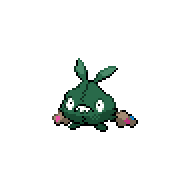
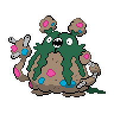
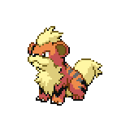
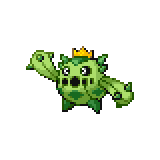
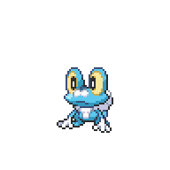
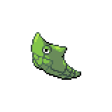
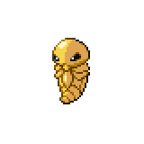
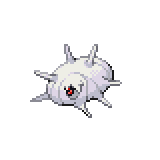
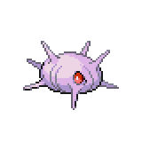

The Abandoned Sewers
The Abandoned Sewers

| Item | Location |
Poison Gem |
Bottom right, by the white barrel |
Potion |
Top right, beside the girl |
Potion |
Top right, behind the girl |
Reverse Candy |
Below Schoolgirl Amanda, in the white barrel |
As you walk it, Ren will give you a welcome and rundown of the Abandoned Sewers. After that, he'll join you. Battles in the Abandoned Sewers, both trainer and wild, during this section will be in double battles with Ren as your partner. Ren's Pokemon are pretty strong, so if you have any underleveled Pokemon you can put them in front to soak up experience. After every battle, Ren will heal up your Pokemon. As another point of note, you can fish in the sewers if you picked up the Old Rod earlier in the Aqua Building. With that being said, head on down and begin exploring.
As you cross the first bridge, Enthusiast Luca.
 will challenge you to a battle. Off to the right you can find a Great Ball. Go back left and up, and you'll battle Technician Jerald.
will challenge you to a battle. Off to the right you can find a Great Ball. Go back left and up, and you'll battle Technician Jerald. If you go north there two hidden Potions up there.
If you go north there two hidden Potions up there.
Head back down to Technician Jerald and cross the bridge. Head up and talk to the Bug Catcher in the corner, who'll give you a Pecha Berry.
 You can enter the generator room above him if you want, but we'll have to come back here later. Head back down, across the bottom bridge, and turn left to battle Schoolgirl Amanda.
You can enter the generator room above him if you want, but we'll have to come back here later. Head back down, across the bottom bridge, and turn left to battle Schoolgirl Amanda. . Right by her will be a Coin Case if you talked to the red-haired woman in Chrisola Hotel Casino. If not, it'll be here when you do talk to her. Head back up across the bridge by Amanda and into the room.
. Right by her will be a Coin Case if you talked to the red-haired woman in Chrisola Hotel Casino. If not, it'll be here when you do talk to her. Head back up across the bridge by Amanda and into the room.
Here, all the way inside, you can by Chinese Food for
 300. This is a healing item that heals for 50 HP, so it's a good idea to stock up on a few. Talking to Youngster Ben
300. This is a healing item that heals for 50 HP, so it's a good idea to stock up on a few. Talking to Youngster Ben will prompt a battle. That's all that's in this room, so go ahead and leave. Head left and up, and you'll meet up with Venam.
will prompt a battle. That's all that's in this room, so go ahead and leave. Head left and up, and you'll meet up with Venam.

Venam will complain about your speed and head on in, but before you and Ren can enter the power will flicker, shutting the doors. Ren tells you that we'll need to go reset the generators, but before we do that cross the left bridge and battle Gang Member Bob.
 Right above him is an Antidote.
Right above him is an Antidote.

With that done, head all the way back over to the generator room, which is next to the Bug Catcher on the left. Ren will tell you that Melia said that 3+1+2 is the solution. As such, reset the generators in that order, the third one, the first, then the second. Once you've done that, you can go ahead and follow Venam into the main control room. Make sure to save beforehand, as there's a fight coming up.

Inside, you'll finally be properly introduced to Melia, Professor Jenner's daughter. Regardless, she can't seem to figure out where the power issues are, so she'll leave it to the engineers. The three start talking about their experiment to confirm the rumors that abandoned trash bags turns into Trubbish, and right on cue a Garbodor emerges from the backrooms, revealing itself as the source of the power issues. Two Trubbishes also appear from the shadow. You and Ren take point and begin the battle.

Garbodor Garbage Crew
This shouldn't be a very challenging battle if you have a full team. Ren's Pokemon are capable of doing large chunks of damage, and once you take out the two Trubbish the Garbodor won't be much of a threat. They really only have Pound as their damaging move, so as long as you can take care of the Poison damage this fight should be a breeze.
|

Trubbish, Level 11 |
Poison | Pound |
|---|---|---|
| Poison Gas | ||
| Recycle | ||
| --- | ||
|
Trubbish, Level 11 |
Poison | Pound |
| Poison Gas | ||
| Recycle | ||
| --- | ||
|

Garbodor, Level 13 |
Poison | Pound |
| Poison Gas | ||
| Toxic Spikes | ||
| --- |
Once the battle is over, Venam will sneak an opportunity to catch one of the Trubbish. Melia will scold the other two and Garbodor will leave with the remaining Trubbish in tow. Either way, with the reason for the power outage gone Melia will go ahead and go to Route 1. Venam, currently homeless, will oversee the repairs. Ren will take you out of the Sewers, direct you to where the train station is, and tells you that he'll be in the library.
Extra Content
Now that you have the Coin Case, you can go to the Chrisola Hotel Casino to check if there's any Pokemon or TM Prizes that you're interested in. Additionally, we can also go to Magnolia Library to battle Ren for some EXP and money.
Pokemon Trainer Ren
Ren has leveled up quite a bit since your last battle against him, and he also added two more Pokemon to complete his starting type chart. His Growlithe can hit really hard, and his Froakie has Protean which can be annoying. But as long as you have a full team with a few Pokemon with type advantages, this battle shouldn't be too difficult.
|

Growlithe, Level 13 |
Fire | Bite |
|---|---|---|
| Flame Burst | ||
| --- | ||
| --- | ||
|

Cacnea, Level 14 |
Grass | Absorb |
| Leech Seed | ||
| Growth | ||
| --- | ||
|

Froakie, Level 15 |
Water | Water Pulse |
| Quick Attack | ||
| --- | ||
| --- | ||
|
Reward: 105
|
||
With all that done, feel free to do a bit of shopping before we leave East Gearen City for a bit. We'll have access to the Pokemon Box, but not any shops so make sure to bring a few Pokeballs and Potions for new Pokemon. If you want, you can also detour here to do some sidequests around the city. Otherwise, head over to the station all the way on the top left corner. We'll be headed to Route 1.
<< East Gearen City (Continued) Route 1 & Goldenwood Forest >>
×
Schoolgirl Amanda
|

Metapod, Level 8 |
Bug | Tackle |

Kakuna, Level 9 |
Bug | Poison Sting |
|---|---|---|---|---|---|
| String Shot | String Shot | ||||
| Harden | Harden | ||||
| --- | --- | ||||
|

Silcoon, Level 8 |
Bug | Tackle |

Cascoon, Level 9 |
Bug | Tackle |
| String Shot | String Shot | ||||
| Harden | Harden | ||||
| --- | --- | ||||
|
Reward: 45
|
|||||
×

Abandoned Sewers